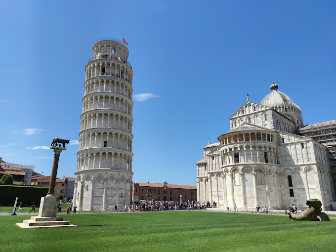
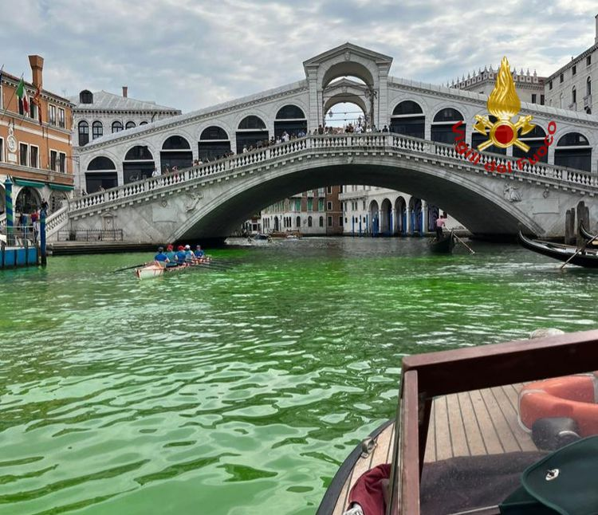

Kolezyum

Roma'nın simgesi olan Kolezyum, Antik Roma döneminden kalma dev bir amfi tiyatrodur. Gladyatör dövüşlerinin yapıldığı bu tarihi yapı, günümüzde İtalya'nın en çok ziyaret edilen yerlerinden biridir.
Pisa Kulesi
Pisa şehrinde bulunan ve eğikliğiyle meşhur olan bu kule, mimari hatasıyla ün kazanmıştır. Yapımı 1173 yılında başlamış olup, İtalya'nın en ikonik yapılarından biridir.
Venedik Kanalları
Venedik, su kanallarıyla ünlü romantik bir şehirdir. Gondol gezileri ve tarihi yapılarıyla ziyaretçilerine eşsiz bir deneyim sunar. Şehir tamamen su üzerinde kurulmuştur ve kara yolu trafiği yoktur.